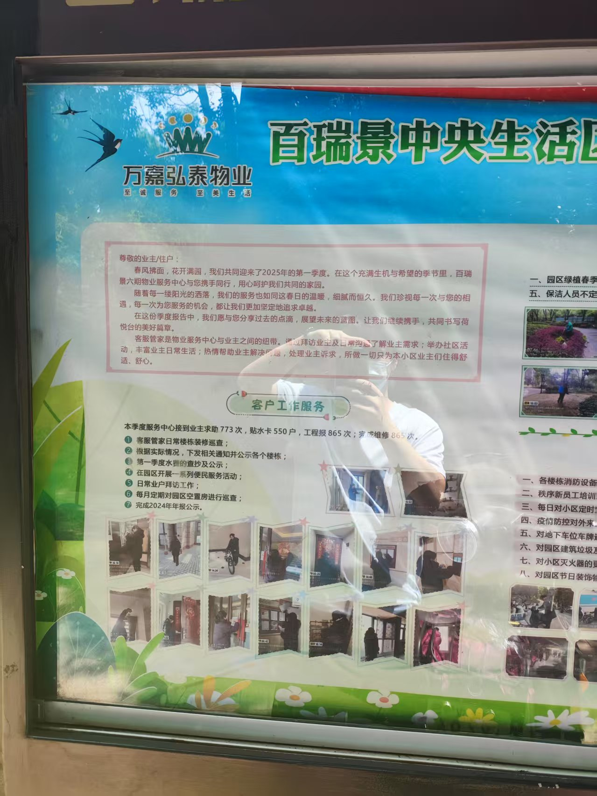

业主观察: 百瑞景六期物业服务中心2025年第一季度服务报告
变更历史
| 日期时间 |
类型 |
作者 |
描述 |
| 2025-05-25 |
增 |
Capric |
拍照 |
| 2025-06-21 |
增 |
Capric |
纂文 |
一、客户工作服务
接到业主求助773次，贴水卡550户，工程报865次; 完成维修865次。
- 客服管家日常楼栋装修巡查；
- 根据实际情况，下发相关通知并公示各个楼栋；
- 第一季度水费的查抄及公示；
- 在园区开展一系列便民服务活动；
- 日常业户拜访工作；
- 每月定期对园区空置房进行巡查；
- 完成2024年年报公示。
二、保洁绿化
- 园区绿植春季施肥及枯枝修剪工作；
- 组织保洁人员不定期对小区垃圾桶进行冲洗；
- 保洁人员对园区公共区域白色垃圾及落叶进行清扫；
- 保洁人员对园区内的排水沟进行清掏淤泥；
- 保洁人员不定期对合楼栋公区进行日常保洁工作；
- 园区落叶不定期进行清扫；
- 园区部分黄土裸露部位进行苗木补栽；
- 园区环境消杀工作；
- 地下车场地面全面清洗工作。
三、秩序服务
- 各楼栋消防设备巡查工作；
- 秩序新员工培训工作；
- 每日对小区定时定路线安全巡查及装修巡查，杜绝安全隐患的发生；
- 疫情防控对外来人员来访进行询问及登记；
- 对地下车位车牌更新并逐步更换；
- 对园区建筑垃圾及楼栋消防通道堆放的杂物进行定期清理；
- 对小区灭火器的更换及检查；消防玻璃维修及更换；
- 对园区节日装饰物进行回收入库工作。
四、工程服务
- 园区公共设备设施的维护和维修工作，确保公共设施设备的恢复正常使用；
- 园区公共设施的能耗进行抄写工作；
- 完成地下室部分排污泵维修工作；
- 完成六期生活垃圾场建造并投入使用；
- 园区路面持续维修工作；
- 完成部分楼栋梯口机维修工作；
- 完成2025年第一季度生活水箱清洗工作；
- 完成园区休闲椅维修及更换工作；
- 完成园区污水井全面疏通工作。
五、下季度工作重点
- 完成地下室部分排污泵维修工作；
- 园区黄土裸露部位全面补种工作；
- 2025年第二季度水费的抄写及公示；
- 开展便民服务活动；
- 完成5、6、8、9号负一楼电梯前室扣板维修及更换；
- 完成同区部分路而硬化工作；
- 完成园区公共区域栏杆刷漆工作；
- 园区绿化整改，对部分黄土裸露部位铺设；
- 完成各接定方栓玻璃维修及更换工作；10. 完成四区部分重点装饰工作。
